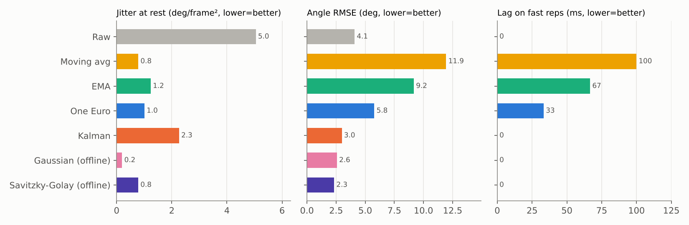

Experimental Comparison
9.1 Running a pose estimator and extracting trajectories
The plan was to run MediaPipe on squat, push-up and lunge video and compare filters on the extracted landmarks. There is a measurement problem with that plan: a real video has no ground-truth joint positions, so we can measure jitter and lag relative to other filters, but not true error. Biomechanics datasets solve this with motion capture; for a tutorial-sized study I used two complementary sources:
- A simulated squat with known truth (all results on this page). A side-view hip–knee–ankle chain is animated through a realistic knee-angle profile, then corrupted with the four noise types from Section 2.4.
- A MediaPipe extraction script for real video (
experiment/extract_landmarks.py), which produces the same CSV format so every filter and metric below can be re-run on a real clip (Section 9.5). Push-ups and lunges use the same code with a different joint triplet (shoulder–elbow–wrist; hip–knee–ankle of the front leg).
| Simulation component | Setting | Mimics |
|---|---|---|
| Timeline (30 fps, 600 frames) | 0–10 s: 4 slow squats (2.5 s each), 10–14 s: standing, 14–20 s: 6 fast squats (1 s each) | Slow, still, and explosive phases |
| Knee angle range | 175° → 85° (slow), 175° → 95° (fast) | Parallel-depth squat |
| White jitter | σ = 0.0045 (hip, knee), 0.0035 (ankle), image-normalized | Per-frame regression noise |
| Slow wobble | AR(1), coefficient 0.9 | Crop shifts, lighting drift |
| Spikes | 1.2% of frames, σ = 0.03, visibility −0.25 | One-frame failures |
| Motion-blur burst | Knee, 4.6–5.0 s, σ = 0.035, visibility 0.15–0.35 | Blur at bottom of a rep |
| Dropout | Knee missing, 16.20–16.45 s (≈ 7 frames) | Detector loses the joint |
The simulation code is simulate() in experiment/run_experiment.py, with a fixed random seed so results are reproducible.
9.2 Applying multiple filters
Each filter runs on the six coordinate series (x and y of hip, knee and ankle), and the knee angle is computed from the filtered points. For the low-pass filters, samples with visibility < 0.5 or missing values are replaced by the last good sample ("hold") before filtering. The Kalman filter instead skips the update and predicts. The offline filters first linearly interpolate gaps of up to 15 frames.
Metrics (on the knee angle):
- Jitter at rest: RMS of the second difference during 10.5–13.5 s, in degrees per frame². Truth is constant here, so ideal is 0.
- RMSE: root-mean-square angle error over the whole clip.
- Lag: the time shift (0–10 frames) that best aligns the filtered angle with the truth during the fast phase.
- Worst error (fast): largest absolute error in the fast phase; this includes the dropout.
- Reps: single-threshold counter / hysteresis counter (Section 8.2). True count: 10.
- µs/update: mean Python time per scalar filter update.
9.3 Comparing raw vs. filtered signals
| Filter | Parameters | Jitter at rest | RMSE (°) | Lag (ms) | Worst err. fast (°) | Reps naive / hyst. | µs / update |
|---|---|---|---|---|---|---|---|
| Raw | — | 5.05 | 4.09 | 0 | 13.7 | 12 / 10 | — |
| Moving avg | N = 7 | 0.79 | 11.95 | 100 | 36.6 | 10 / 9 | 1.1 |
| EMA | α = 0.3 | 1.24 | 9.17 | 67 | 35.7 | 10 / 10 | 0.4 |
| One Euro | fc,min = 1.0 Hz, β = 15, dcutoff = 1 Hz | 1.01 | 5.78 | 33 | 31.1 | 10 / 10 | 1.6 |
| Kalman | CV, q = 10, r = 10⁻⁴, gate 4σ, R/c² | 2.27 | 3.00 | 0 | 9.0 | 10 / 10 | 18.6 |
| Gaussian (offline) | σ = 2 frames | 0.20 | 2.57 | 0 | 7.7 | 10 / 10 | — |
| Savitzky-Golay (offline) | window 11, cubic | 0.78 | 2.33 | 0 | 6.6 | 10 / 10 | — |

Plots of the individual phases are in earlier sections: the whole clip (Figure 2.2), standing still (Figure 7.2), fast reps (Figure 7.1), and the blur and dropout (Figure 6.1).
What the numbers say
- Every filter removed most of the jitter (5.05 → 0.2–2.3), and every filter fixed the naive rep counter's double counts.
- Several low-pass filters have higher RMSE than the raw signal. This surprised me at first. Raw keypoints are noisy but unbiased; a lagging filter is smooth but systematically wrong during fast motion, and that error is large (up to tens of degrees at 1 rep/s) while it lasts. The "hold" strategy during the 7-frame dropout adds to this (the worst-error column). Smoothness is not the same as accuracy.
- One Euro gave the best smoothness/lag balance among causal filters: near-EMA jitter with half the lag.
- Kalman had the lowest causal RMSE and handled the dropout far better (worst error 9° vs. 31–37° for hold-based filters), but let through about twice the jitter of One Euro when standing still, because q was tuned for responsiveness.
- Moving average was smooth but slowest, and its flattened rep bottoms caused a missed rep with the hysteresis counter.
- Offline filters were best overall (RMSE 2.3–2.6°), which shows how much accuracy live feedback gives up.
9.4 Discussion: which filter when?
| Situation | Recommendation |
|---|---|
| Live skeleton overlay, mostly slow movement | One Euro on each coordinate |
| Live analytics with occlusions or frequent detector failures | Kalman with confidence-scaled R and gating; optionally One Euro after it |
| Rep counting | Any of the above + hysteresis; avoid long moving averages |
| Post-set or clinical scoring (Section 8.4) | Interpolate gaps, then Savitzky–Golay or Gaussian (zero lag) |
| Very limited code/memory | EMA, with α computed from a cutoff and real Δt |
Limits of this experiment: the noise is simulated and independent per joint, while real detector errors are often correlated across joints and with motion; only one exercise and one camera view were tested; and parameters were tuned on the same clip they were evaluated on, which flatters every filter a little. Running the same scripts on several real, labeled clips would make the comparison stronger.
9.5 Run it on your own video
pip install mediapipe opencv-python numpy scipy matplotlib
# download pose_landmarker_lite.task (link in extract_landmarks.py), then:
python extract_landmarks.py my_squats.mp4 --side left # MediaPipe VIDEO mode
python extract_landmarks.py my_squats.mp4 --side left --image-mode # every frame independent
python run_experiment.py --csv landmarks.csv # plots raw vs. filtered
python run_experiment.py --simulate # reproduces this pageFilm from the side with the whole body in view. Note that MediaPipe's VIDEO running mode already tracks between frames, so its output is somewhat smoother than truly independent per-frame detection; --image-mode shows the raw per-frame jitter. Without ground truth the script reports jitter and rep counts only.
Summary
- Simulated data with known truth lets us measure error, not just smoothness.
- One Euro: best jitter/lag balance. Kalman: best causal accuracy and gap handling. Offline smoothers: best overall.
- Smoother is not always more accurate; lag creates its own error.